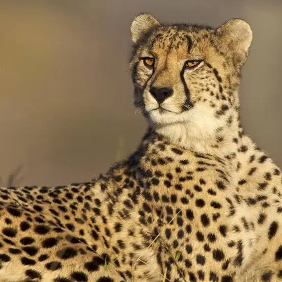
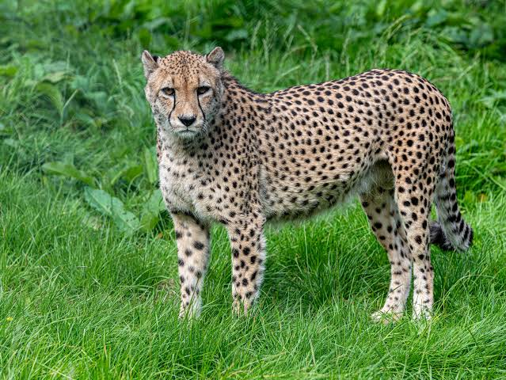
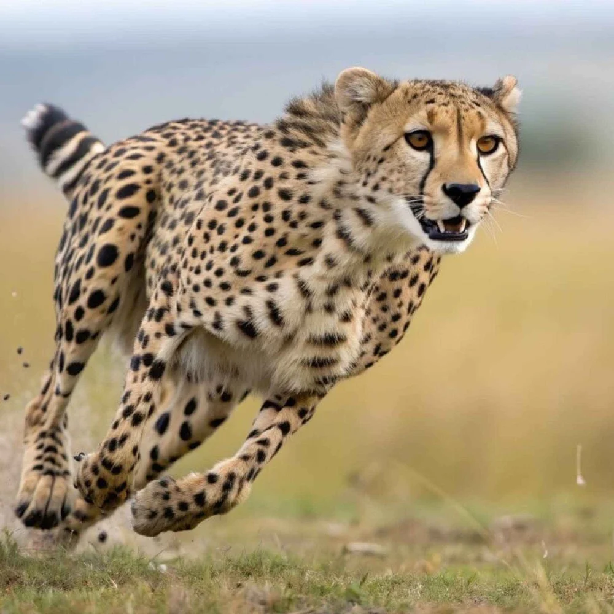
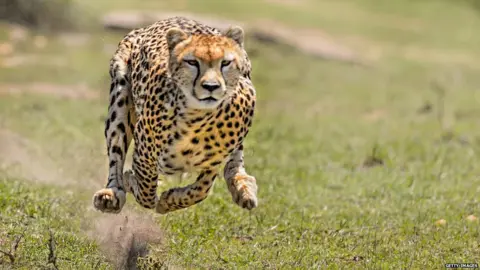
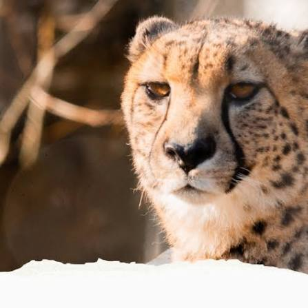
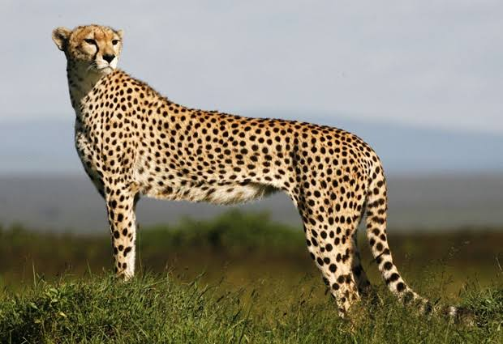
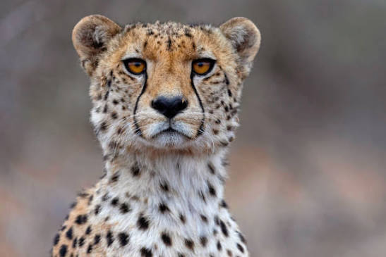
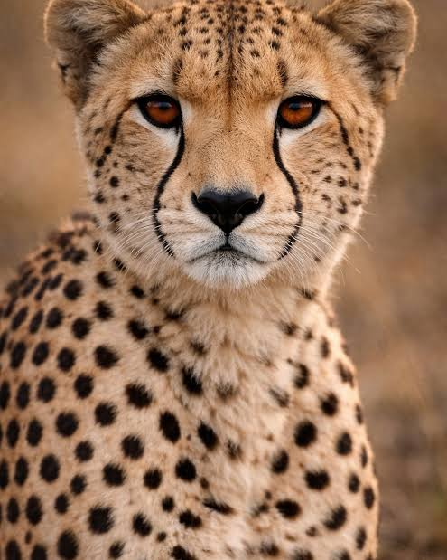

Mito ou Verdade?Guepardos mantêm a velocidade máxima por horas!

MitoEles chegam a cerca de 100 km/h, mas só mantêm essa velocidade por uns 30 segundos.
Passe o mouse, toque ou use Enter em cada cartão para descobrir a verdade.
Cartões virados: 0 de 4

Mito ou Verdade?Guepardos mantêm a velocidade máxima por horas!

MitoEles chegam a cerca de 100 km/h, mas só mantêm essa velocidade por uns 30 segundos.

Mito ou Verdade?Guepardos rugem como os leões!

MitoEles não rugem: miam, ronronam e ronronam como felinos menores.

Mito ou Verdade?Guepardo e leopardo são o mesmo animal!

MitoSão espécies diferentes. O guepardo tem pintas simples e linhas escuras características do olho até a boca.

Mito ou Verdade?Guepardos escondem as garras como os gatos domésticos!

MitoSuas garras são semirretráteis e não se recolhem totalmente, funcionando como chuteiras para tração na corrida.